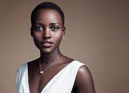

Lupita Amondi Nyong'o is a Kenyan-Mexican actress. The daughter of Kenyan politician Peter Anyang Nyong'o, Nyong'o was born in Mexico City, where her father was teaching, and was raised in Kenya from the age of one. She attended college in the United States, earning a bachelor's degree in film and theatre studies from Hampshire College.
Born: March 1, 1983, Mexico City, Mexico
Net worth: US$ 8 million (2019)
Spouse: Not married
Parent(s): Peter Anyang' Nyong'o (father); Dorothy Ogada Buyu (mother)
Awards: Academy Award for Best Actress in a Supporting Role
Click here to go back to Friends List